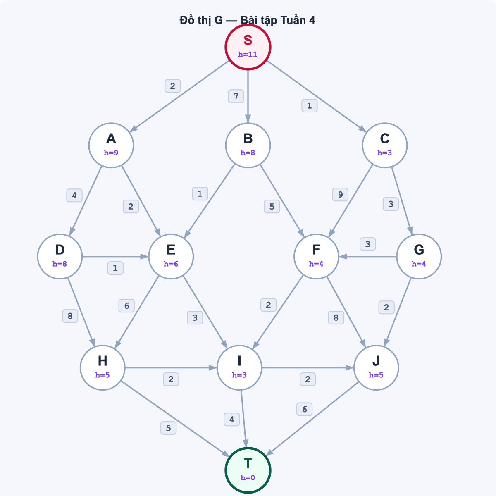
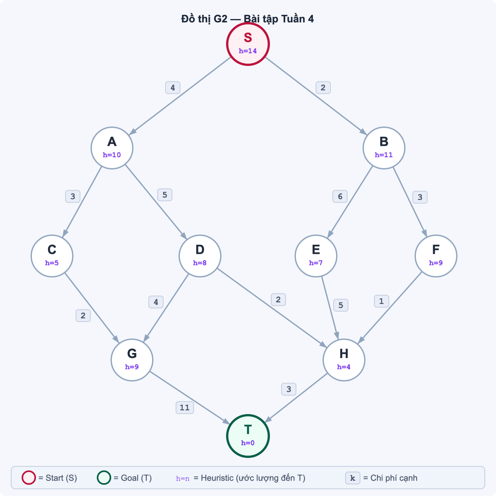
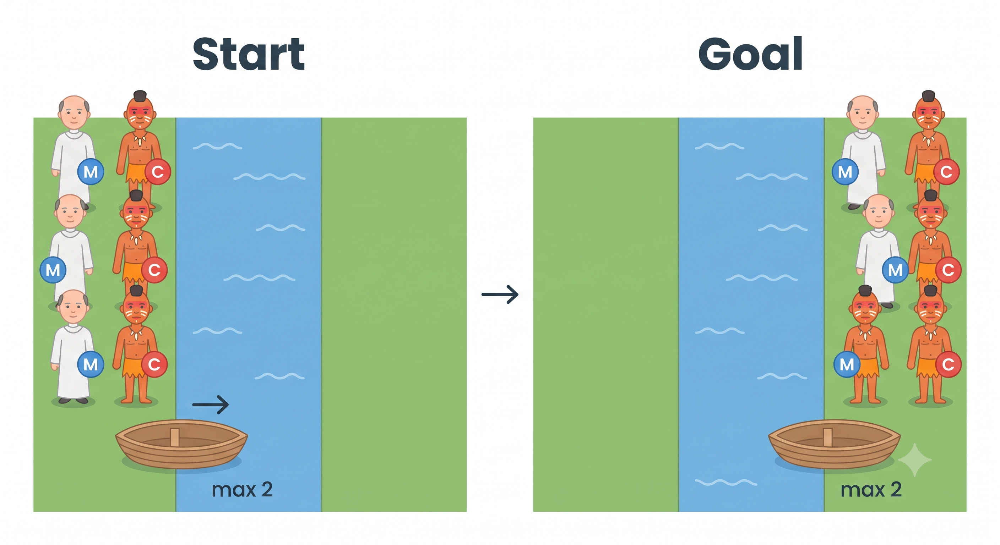

Algorithm Review (read before doing the test)
Path Cost
The path cost of a solution is the total weight of all edges along the path from start to goal.
If a path visits nodes S → n₁ → n₂ → … → T:
g(path) = w(S→n₁) + w(n₁→n₂) + … + w(nₖ→T)
where w(u→v) is the edge weight between u and v.
Example — Graph G (refer to Exercise 1):
| Path | Calculation | Total cost |
|---|
| S → A → D → H → T |
2 + 4 + 8 + 5 |
19 |
| S → C → F → I → T |
1 + 9 + 2 + 4 |
16 |
| S → A → E → I → T |
2 + 2 + 3 + 4 |
11 ✓ |
A shorter path (fewer edges) is not necessarily cheaper — a longer route can cost less if its edge weights are smaller. Always sum the weights, do not count steps.
Hill Climbing (Steepest Ascent)
Hill Climbing is a local search algorithm. It keeps track of only the current node — no OPEN list, no backtracking.
Traversal rule:
- Start at the initial node.
- Generate all successors (neighbors reachable by one step).
- Select the successor with the lowest h(n).
- If that successor's h is lower than the current node's h → move there (it becomes the new current node).
- If no successor improves (all h ≥ current h) → stop (local minimum reached).
- Repeat from step 2 until goal is reached or algorithm stops.
| Property | Hill Climbing |
|---|
| Uses h(n)? | Yes |
| Tracks cost g(n)? | No |
| Maintains OPEN list? | No |
| Can backtrack? | No |
| Guaranteed to find goal? | No — may get stuck at local minima |
| Guaranteed optimal? | No |
Local minimum: a node whose h value is lower than all its neighbors. Hill Climbing cannot escape — it has no memory of other paths.
Exercise 1
Uninformed & Heuristic Search on Graph G
The directed weighted graph G below is given. Each node shows its heuristic value h(n) — an estimate of the distance to goal node T. Edge weights represent movement costs.

Graph G — nodes labeled with h(n) values
Choose one uninformed and one heuristic search algorithm from the lists below. For each, find a path from S to T and trace your steps.
Uninformed
- BFS
- DFS
- Depth-Limited DFS (L = 4)
- Iterative Deepening DFS
Heuristic
- Greedy Best-First
- Beam Search (w = 2)
- Hill Climbing (Steepest Ascent)
Tie-breaking rule: when multiple nodes have equal priority, expand in alphabetical order.
Questions
1.1Which of your two algorithms finds the lower-cost path? Why?
1.2If Greedy Best-First is applied, which path does it follow? Why does h(C) = 3 mislead Greedy but not BFS?
1.3What is the true optimal path? (Hint: total cost < 12)
Exercise 2
Hill Climbing & Beam Search on Graph G2
The directed weighted graph G2 below is given with a new set of heuristic values.

Graph G2 — nodes labeled with h(n) values
Apply Hill Climbing (Steepest Ascent) and Beam Search (w = 2) to find a path from S to T. Trace your steps for each.
Tie-breaking rule: alphabetical order.
Questions
2.1Does Hill Climbing find a path to T? If not, at which node does it stop and why?
2.2How does Beam Search (w = 2) avoid the problem Hill Climbing encounters?
2.3What is the true optimal path and its cost? Is it found by either algorithm?
Exercise 3
Missionaries and Cannibals

Setup. 3 missionaries (M) and 3 cannibals (C) must all cross a river from the left bank to the right bank. A single boat holds at most 2 people and requires at least 1 person per crossing.
Constraint. On either bank, cannibals may never outnumber missionaries — unless no missionaries are present on that bank.
State notation: (ML, CL, b)
- ML = number of missionaries on the left bank
- CL = number of cannibals on the left bank
- b = boat position: L (left) or R (right)
The right bank is implicit: right missionaries = 3 − ML, right cannibals = 3 − CL.
| State | Left bank | Boat | Right bank | Meaning |
|---|
| (3, 3, L) |
3M + 3C |
← left |
empty |
Start |
| (0, 0, R) |
empty |
right → |
3M + 3C |
Goal |
| (3, 1, R) |
3M + 1C |
right → |
0M + 2C |
After move 1: 2C cross right |
Start: (3, 3, L)
Goal: (0, 0, R)
Validity check for state (ML, CL, b):
- Left bank:
ML = 0 or ML ≥ CL
- Right bank:
(3−ML) = 0 or (3−ML) ≥ (3−CL)
Apply BFS to find the minimum-move solution. Use state (ML, CL, b) as the node representation. Expand states in order: smaller ML first, then smaller CL.
Questions
3.1How many moves does BFS need to reach the goal?
3.2Suppose we apply Hill Climbing with heuristic h(ML, CL, b) = ML + CL. At which state does HC get stuck, and why?
3.3What property of this problem makes it fundamentally harder for local search (HC, Greedy) than for BFS?
Exercise 4 — Scenario
Flood Relief Route Planning
Scenario
A rescue convoy departs from the Provincial Coordination Center and must reach an Isolated Commune cut off by floodwater in Central Vietnam. Roads are partially flooded or damaged; travel times (hours) between checkpoints are listed below.
| From | To | g(n) |
|---|
| Coordination Center | Phố Cũ Town | 2 |
| Northern Border Post | 3 |
| Intercity Terminal | 4 |
| Phố Cũ Town | Khe Đá Flooded Bridge | 1 |
| Hòa Bình School | 3 |
| Northern Border Post | Hòa Bình School | 2 |
| Southern Supply Point | 4 |
| Intercity Terminal | Southern Supply Point | 2 |
| Bản Đồng Junction | 5 |
| Khe Đá Flooded Bridge | Highland Medical Post | 6 |
| Bản Đồng Junction | 7 |
| Hòa Bình School | Bản Đồng Junction | 3 |
| Highland Medical Post | 2 |
| Southern Supply Point | Highland Medical Post | 3 |
| Flood Checkpoint | 4 |
| Bản Đồng Junction | Flood Checkpoint | 2 |
| Isolated Commune | 4 |
| Highland Medical Post | Isolated Commune | 5 |
| Flood Checkpoint | Isolated Commune | 2 |
Heuristic h(n) — estimated helicopter flight time to the Isolated Commune:
| Location | h(n) | Location | h(n) |
|---|
| Coordination Center | 9 | Hòa Bình School | 6 |
| Phố Cũ Town | 5 | Southern Supply Point | 5 |
| Northern Border Post | 7 | Bản Đồng Junction | 4 |
| Intercity Terminal | 6 | Highland Medical Post | 4 |
| Khe Đá Flooded Bridge | 3 | Flood Checkpoint | 2 |
| Isolated Commune (goal) | 0 | | |
Task: Draw the state space graph on paper from the description above. Then apply Hill Climbing (Steepest Ascent) and Greedy Best-First Search to find a route from the Coordination Center to the Isolated Commune.
Tie-breaking rule: when equal priority, expand in alphabetical order of location names.
Questions
4.1Does Hill Climbing find a route to the Isolated Commune? If not, at which location does it stop and why?
4.2Which route does Greedy Best-First find? What is the total travel time?
4.3What is the truly optimal route and its total travel time?
Submission: one .ipynb file. Each exercise is one section. Run all cells before submitting — output must be visible.
P1
Heuristic Search on Graph G
Graph G is provided as Python data structures below. Use them directly — do not re-type the graph.
# graph[u] = list of (v, edge_cost) sorted alphabetically by v
graph_G = {
'S': [('A', 2), ('B', 7), ('C', 1)],
'A': [('D', 4), ('E', 2)],
'B': [('E', 1), ('F', 5)],
'C': [('F', 9), ('G', 3)],
'D': [('E', 1), ('H', 8)],
'E': [('H', 6), ('I', 3)],
'F': [('I', 2), ('J', 8)],
'G': [('F', 3), ('J', 2)],
'H': [('I', 2), ('T', 5)],
'I': [('J', 2), ('T', 4)],
'J': [('T', 6)],
'T': []
}
h_G = {
'S': 11, 'A': 9, 'B': 8, 'C': 3,
'D': 8, 'E': 6, 'F': 4, 'G': 4,
'H': 5, 'I': 3, 'J': 5, 'T': 0
}
Tasks
- Implement
greedy_search(graph, h, start, goal) — use a priority queue (OPEN list) sorted by h(n). Return (path, cost, nodes_expanded).
- Implement
hill_climbing(graph, h, start, goal) — no OPEN list, move greedily. Return (path, cost, nodes_expanded) or (None, None, nodes_expanded) if stuck before reaching the goal.
- Run both on
graph_G with start='S', goal='T' and print results in the format below.
=== Greedy Best-First ===
Path : S → C → F → I → T
Cost : 16
Nodes : 5
=== Hill Climbing ===
Path : stuck at C
Cost : —
Nodes : 2
Questions — answer in a Markdown cell
1.1Does your output match the hand trace from Part I Exercise 1? If it differs, explain why.
1.2Modify h_G so that h['C'] = 10. Re-run Greedy. Which path does it now find? What does this tell you about the role of the heuristic?
P2
Missionaries and Cannibals (BFS)
A state is a tuple (ML, CL, b) where ML = missionaries on left, CL = cannibals on left, b ∈ {'L', 'R'}.
Tasks
- Implement
is_valid(state) — return True if the state satisfies the safety constraint on both banks.
- Implement
get_successors(state) — return all valid next states reachable by one boat crossing. The boat carries between 1 and 2 people.
- Implement
bfs_mc(start, goal) — BFS that returns the full solution path as a list of states, or None if no solution exists.
- Run from
(3, 3, 'L') to (0, 0, 'R') and print each step:
Step 0 : (3, 3, L) → send 2C right
Step 1 : (3, 1, R) → ...
...
Step 11 : (0, 0, R) ✓ Goal reached
Questions — answer in a Markdown cell
2.1How many states does BFS explore before finding the goal? Print len(closed) at the end.
2.2Try changing the boat capacity to 3. Does BFS find a shorter solution? How many steps?
P3
Algorithm Comparison
Using graph_G and h_G from P1, implement Beam Search and run all three algorithms side by side.
Tasks
- Implement
beam_search(graph, h, start, goal, w) — at each level keep the w nodes with lowest h. Return (path, cost, nodes_expanded).
- Run Greedy, Hill Climbing, and Beam Search (
w = 2) on graph_G.
- Collect results into a table and plot two bar charts side by side using
matplotlib:
- Chart 1: Path cost for each algorithm
- Chart 2: Nodes expanded for each algorithm
# Expected table (your values may vary if HC gets stuck)
# Algorithm | Path cost | Nodes expanded
# Greedy | 16 | 5
# Hill Climbing | — | 2
# Beam (w=2) | 16 | ?
Task 4
Run Beam Search with w = 1, w = 2, w = 3. Add a line chart showing how path cost changes as w increases.
Questions — answer in a Markdown cell
3.1What happens to Beam Search when w = 1? Why?
3.2Which algorithm expands the fewest nodes? Is that always a good thing?
3.3From the w experiment: at what width does Beam Search first find the optimal path (cost = 11)?